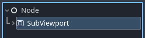
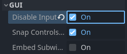
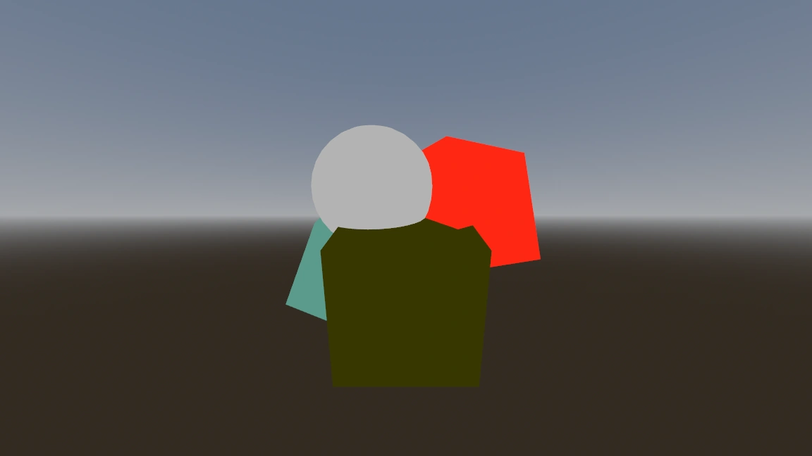
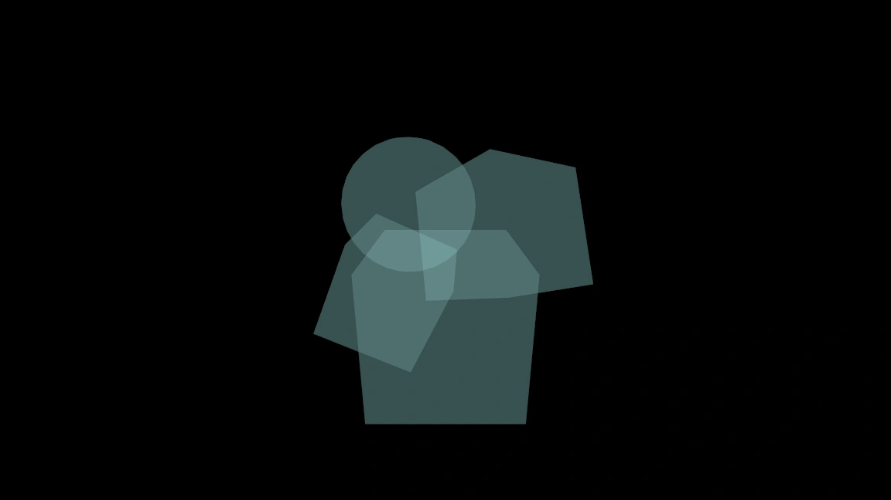
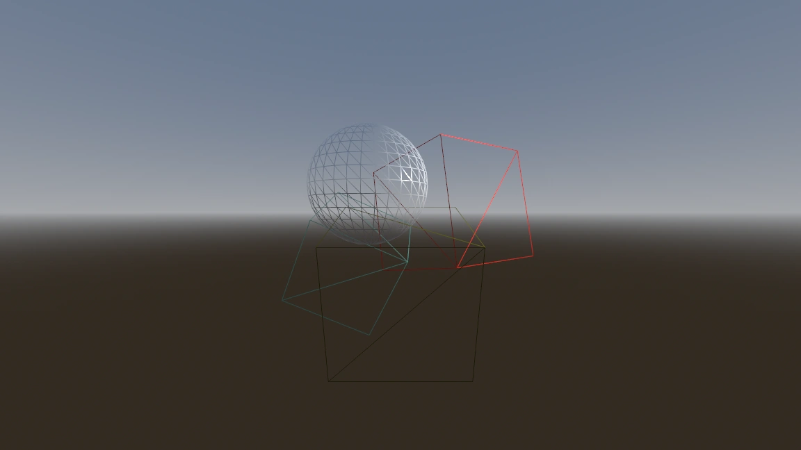
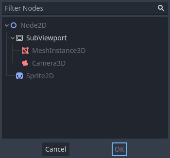

Using Viewports
Introduction
Think of a Viewport as a screen onto which the game is projected. In order to see the game, we need to have a surface on which to draw it. That surface is the Root Viewport.

SubViewports are a kind of Viewport that can be added to the scene so that there are multiple surfaces to draw on. When we are drawing to a SubViewport, we call it a render target. We can access the contents of a render target by accessing its corresponding texture. By using a SubViewport as render target, we can either render multiple scenes simultaneously or we can render to a ViewportTexture which is applied to an object in the scene, for example a dynamic skybox.
SubViewports have a variety of use cases, including:
Rendering 3D objects within a 2D game
Rendering 2D elements in a 3D game
Rendering dynamic textures
Generating procedural textures at runtime
Rendering multiple cameras in the same scene
What all these use cases have in common is that you are given the ability to draw objects to a texture as if it were another screen and can then choose what to do with the resulting texture.
Another kind of Viewports in Godot are Windows. They allow their content to be projected onto a window. While the Root Viewport is a Window, they are less flexible. If you want to use the texture of a Viewport, you'll be working with SubViewports most of the time.
Input
Viewports are also responsible for delivering properly adjusted and scaled input events to their children nodes. By default SubViewports don't automatically receive input, unless they receive it from their direct SubViewportContainer parent node. In this case, input can be disabled with the Disable Input property.

For more information on how Godot handles input, please read the Input Event Tutorial.
Listener
Godot supports 3D sound (in both 2D and 3D nodes). More on this can be found in the Audio Streams Tutorial. For this type of sound to be audible, the Viewport needs to be enabled as a listener (for 2D or 3D). If you are using a SubViewport to display your World3D or World2D, don't forget to enable this!
Cameras (2D & 3D)
When using a Camera3D or Camera2D, it will always display on the closest parent Viewport (going towards the root). For example, in the following hierarchy:

CameraA will display on the Root Viewport and it will draw MeshA. CameraB
will be captured by the SubViewport along with MeshB. Even though MeshB is in the scene
hierarchy, it will still not be drawn to the Root Viewport. Similarly, MeshA will not
be visible from the SubViewport because SubViewports only
capture nodes below them in the hierarchy.
There can only be one active camera per Viewport, so if there is more than one, make sure that the desired one has the current property set, or make it the current camera by calling:
camera.make_current()
camera.MakeCurrent();
By default, cameras will render all objects in their world. In 3D, cameras can use their cull_mask property combined with the VisualInstance3D's layer property to restrict which objects are rendered.
Scale & stretching
SubViewports have a size property, which represents the size of the SubViewport in pixels. For SubViewports which are children of SubViewportContainers, these values are overridden, but for all others, this sets their resolution.
It is also possible to scale the 2D content and make the SubViewport resolution different from the one specified in size, by calling:
sub_viewport.set_size_2d_override(Vector2i(width, height)) # Custom size for 2D.
sub_viewport.set_size_2d_override_stretch(true) # Enable stretch for custom size.
subViewport.Size2DOverride = new Vector2I(width, height); // Custom size for 2D.
subViewport.Size2DOverrideStretch = true; // Enable stretch for custom size.
For information on scaling and stretching with the Root Viewport visit the Multiple Resolutions Tutorial
Worlds
For 3D, a Viewport will contain a World3D. This is basically the universe that links physics and rendering together. Node3D-based nodes will register using the World3D of the closest Viewport. By default, newly created Viewports do not contain a World3D but use the same as their parent Viewport. The Root Viewport always contains a World3D, which is the one objects are rendered to by default.
A World3D can be set in a Viewport using the World 3D property, that will separate all children nodes of this Viewport and will prevent them from interacting with the parent Viewport's World3D. This is especially useful in scenarios where, for example, you might want to show a separate character in 3D imposed over the game (like in StarCraft).
As a helper for situations where you want to create Viewports that display single objects and don't want to create a World3D, Viewport has the option to use its Own World3D. This is useful when you want to instance 3D characters or objects in World2D.
For 2D, each Viewport always contains its own World2D. This suffices in most cases, but in case sharing them may be desired, it is possible to do so by setting world_2d on the Viewport through code.
For an example of how this works, see the demo projects 3D in 2D and 2D in 3D respectively.
Capture
It is possible to query a capture of the Viewport contents. For the Root Viewport, this is effectively a screen capture. This is done with the following code:
# Retrieve the captured Image using get_image().
var img = get_viewport().get_texture().get_image()
# Convert Image to ImageTexture.
var tex = ImageTexture.create_from_image(img)
# Set sprite texture.
sprite.texture = tex
// Retrieve the captured Image using get_image().
var img = GetViewport().GetTexture().GetImage();
// Convert Image to ImageTexture.
var tex = ImageTexture.CreateFromImage(img);
// Set sprite texture.
sprite.Texture = tex;
But if you use this in _ready() or from the first frame of the Viewport's initialization,
you will get an empty texture because there is nothing to get as texture. You can deal with
it using (for example):
# Wait until the frame has finished before getting the texture.
await RenderingServer.frame_post_draw
# You can get the image after this.
// Wait until the frame has finished before getting the texture.
await ToSignal(RenderingServer.Singleton, RenderingServer.SignalName.FramePostDraw);
// You can get the image after this.
Viewport Container
If the SubViewport is a child of a SubViewportContainer, it will become active and display anything it has inside. The layout looks like this:

The SubViewport will cover the area of its parent SubViewportContainer completely
if Stretch is set to true in the SubViewportContainer.
Note
The size of the SubViewportContainer cannot be smaller than the size of the SubViewport.
Rendering
Due to the fact that the Viewport is an entryway into another rendering surface, it exposes a few
rendering properties that can be different from the project settings. You can
choose to use a different level of MSAA for each Viewport. The default behavior is Disabled.
If you know that the Viewport is only going to be used for 2D, you can Disable 3D. Godot will then restrict how the Viewport is drawn. Disabling 3D is slightly faster and uses less memory compared to enabled 3D. It's a good idea to disable 3D if your viewport doesn't render anything in 3D.
Note
If you need to render 3D shadows in the viewport, make sure to set the viewport's positional_shadow_atlas_size property to a value higher than 0.
Otherwise, shadows won't be rendered. By default, the equivalent project setting is set to 4096 on desktop platforms and 2048 on mobile platforms.
Godot also provides a way of customizing how everything is drawn inside Viewports using Debug Draw.
Debug Draw allows you to specify a mode which determines how the Viewport will display things drawn
inside it. Debug Draw is Disabled by default. Some other options are Unshaded, Overdraw, and Wireframe. For a full list, refer to the Viewport Documentation.
Debug Draw = Disabled (default): The scene is drawn normally.

Debug Draw = Unshaded: Unshaded draws the scene without using lighting information so all the objects appear flatly colored in their albedo color.

Debug Draw = Overdraw: Overdraw draws the meshes semi-transparent with an additive blend so you can see how the meshes overlap.

Debug Draw = Wireframe: Wireframe draws the scene using only the edges of triangles in the meshes.

Note
Debug Draw modes are currently not supported when using the Compatibility rendering method. They will appear as regular draw modes.
Render target
When rendering to a SubViewport, whatever is inside will not be visible in the scene editor. To display the contents, you have to draw the SubViewport's ViewportTexture somewhere. This can be requested via code using (for example):
# This gives us the ViewportTexture.
var tex = viewport.get_texture()
sprite.texture = tex
// This gives us the ViewportTexture.
var tex = viewport.GetTexture();
sprite.Texture = tex;
Or it can be assigned in the editor by selecting "New ViewportTexture"

and then selecting the Viewport you want to use.

Every frame, the Viewport's texture is cleared away with the default clear color (or a transparent
color if Transparent BG is set to true). This can be changed by setting Clear Mode to Never or Next Frame.
As the name implies, Never means the texture will never be cleared, while next frame will
clear the texture on the next frame and then set itself to Never.
By default, re-rendering of the SubViewport happens when
its ViewportTexture has been drawn in a frame. If visible, it will be
rendered, otherwise, it will not. This behavior can be changed by setting Update Mode to Never, Once, Always, or When Parent Visible.
Never and Always will never or always re-render respectively. Once will re-render the next frame and change to Never afterwards. This can be used to manually update the Viewport.
This flexibility allows users to render an image once and then use the texture without incurring the cost of rendering every frame.
Note
Make sure to check the Viewport demos. They are available in the viewport folder of the demos archive, or at https://github.com/godotengine/godot-demo-projects/tree/master/viewport.